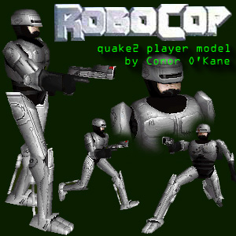

Robocop Quake2 player model by Conor
O'Kane
Directive 1: Serve the public
trust.
Directive 2: Protect the innocent.
Directive 3: Uphold the law.
Directive 4 (Classified): Unzip the contents of robocop.zip into
quake2\baseq2\players\robocop and then frag everyone.
Model info:
| tris.md2 | weapon.md2 | |
| Vertices | 478 | 25 |
| Mapping vertices | 403 | 35 |
| Faces | 761 | 34 |
| Skin size | 256 X 256 | 64 X 64 |
| Skin use | 75% | 68% |
Sounds: Pain and death sounds are recorded from the original
Robocop film, all other sounds are the id cyborg model sounds.
Skins: 4 - including CTF skins and damage skin.
Eraser Bot config:
#Robocop
"Robocop"
"robocop/murphy"
4 1 3 5 0 0 200
"Robopain"
"robocop/damaged" 2
5 2 5 0 0 200
"RedRobocop"
"robocop/ctf_r"
4 1 3 5 0 0 200
"BlueRobocop"
"robocop/ctf_b"
4 1 3 5 0 0 200
VWep: No - Robocop is designed and animated holding a pistol so
VWep wouldn't look right.
Software used:
3DS Max - Modelling and animation.
NST - Skin mapping (and phong shaded screen grabs).
Quake 2 Model Editor - Compiling, vertex animation and some skin
mapping.
Deluxe Paint - Skin painting.
Sound Forge - Sound recording and filtering.
Thanx and credits:
Planetquake, Bodyshop and Quaker Refuge.
Everyone at the Q2 Player Models Pack.
Phillip Martin for the Max ASCII exporter and Q2 Model
Editor.
NPherno for NST.
Id Software.
Ridah
for Eraserbot.
The Skinview Team.
Robocop is directed by Paul Verhoeven, designed by Rob Bottin and
played by Peter Weller.
Robocop links:
Quicktime VR Robocop movie.
The Robocop Realm - fan site.
Robocop Central - fan site.
Conor O'Kane - September 11th 1998
http://indigo.ie/~wip3out/quake2.html